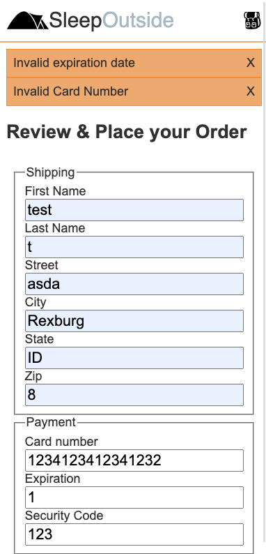

Last week we got our checkout working...barely. If the user does
everything exactly the way you want the to the order will succeed. The
user hardly ever does everything just how you want them to :) We need
to harden up our code and add error handling and better validation.
Instructions
Complete the following assignment as a team. Designate one team member
as the "main driver" and collaborate on their copy of the code.
Everyone on the team should be actively engaged in writing the code
and contributing to the solution. Once the solution is working, make
sure that everyone on the team gets a copy of the code. Each week let
someone else be the "main driver" of the coding.
Core Requirements
The driver should visit the team's copy of the Trello board for
the project. Add each of the attending team members to the
"Team7: Error handling and Validation" task...then move it to
'Doing'. Read the details of the card together.
The driver should make sure to pull any changes from
Github before proceeding. Next they should create a new branch
called initials--team7. So if the driver's name were
John Doe the branch should be called jd--team7
Figuring out what went wrong.
Currently if our order fails we get the very descriptive error
message "Bad Request". Turns out that the server is actually
sending back much more information than that, but we are
throwing it away by how we are processing our response. We need
to change this first.
Open the ExternalServices.js module and take a look
at the convertToJson function. It should look
something like this:
async function convertToJson(res) {
if (res.ok) {
return res.json();
} else {
throw new Error('Bad Response');
}
}
On line 1 we check our response to see if it is ok. Ok is any
status of 200, or most 300s. If the status on the response is
40x or 50x then it is NOT ok. The server we are communicating
with sends back a 400 response if something goes wrong. Then it
puts the details in the body of the response. If we fail the ok
test...we immediately throw an error with the message 'Bad
Response'. What we need to do is get the detailed error message
out of the response body.
Refactor this function by converting our response body to json
before we check if it's ok. Then if it is not ok then send the
response body on in our throw statement.
throw new Error() is a nice way to let the
application know that something went wrong. There is only one
problem with it in this case...Error() takes a simple string
as an argument. We can't send an object. There are a couple of
ways to get around this.
First we could stringify the object. Second is we
could send a custom object back with our
throw instead of the default
new Error(). In this case the second makes more
sense.
An Error object normally has a name property and a
message property. Let's model our object after
this.
Change the line that looks like
throw new Error('Bad Response'); to something more
like this:
The variable jsonResponse should be the body of the
response from the server that we converted to json.
Catching our Error
Throwing an error when something goes wrong does little good if
we don't catch it somewhere and deal with it.
In this case there are a couple of options for where to place
our
catch. We could place it in the
checkout method that we wrote in the
ExternalServices module, or we could place it in the
checkout method of the CheckoutProcess
module. Discuss with your group for a few minutes the pros and
cons of putting it in each place.
Handling an error close to where it happened is usually a good
thing, but we need to let the user know what they did wrong in
this case. The form and form handling is in the
CheckoutProcess module, and so in this case it makes
sense to catch the error there.
Add a try { } catch(err) { } block in the
CheckoutProcess->checkout. the part of the code that
we are worried about breaking should go inside
try { // code here }, and whatever you want to
happen if the code in the try blows up should go in the
catch(err) { }
Form validation
One of the things that the server will complain about is if any
of the fields are missing information. HTML can actually do a
really nice job of checking for that. All we need to do is add
required as an attribute of an
input element. If you did not do that last week,
add required to all of our form inputs. Then click the submit
button.
Depending on how you are listening for the form submission your
HTML validation may or may not be working. If you attached a
click listener on the button we will need to
trigger the validation ourselves, if you listened for the
submit event on the form the validation should
automatically be working. Last week we determined that since we
were submitting our form through AJAX, we did not want the form
to do what it normally would do if submitted. In the listener
for the form button you have added
e.preventDefault();. That part of your code should
look something like this:
IF your HTML form validation is not working...do the following
in your listener handler function:
Get the form from the DOM.
Forms have a method called checkValidity that
will return false if it finds anything in the form data that
goes against our validation rules. Call it and store the
result.
We can also manually trigger the messages that the browser
will add to the page when something is wrong. That is done
with myForm.reportValidity()
Finally if our validity test came back false we do not want
to continue...so wrap myCheckout.checkout(); in
an if statement.
Your final code should look something like this:
document.querySelector('#checkoutSubmit')
.addEventListener('click', (e) => {
e.preventDefault();
var myForm = document.forms[0];
var chk_status = myForm.checkValidity();
myForm.reportValidity();
if(chk_status)
myCheckout.checkout();
});
By leveraging the built in HTML validation that the browser can
do, we dramatically reduced the amount of error handling we will
need to do on our end!
Thinking back to the reading from last week (MDN: Client side form validation), what else should we add to our HTML validation to help our
users to give us good input? Discuss this with your team and add
those things you think appropriate.
Handling the Happy Path :)
Currently our application does not give any feedback to the user
about whether the order succeeded or failed. Let's start by
responding to a successful order. We should probably do the
following:
Give the user a success message
Clear out the cart.
???
This is not a very long list. the main decision to be made is
how do we want to message the user? We could either pop
something up in the current page, or take the user to a new page
with a success message. Leaving them on the page with the form
does not make a lot of sense...so let's move to a success page.
Inside of the checkout directory create a new file:
checkedout.html. Add our base formatting including
header and footer, and then add a success message for the user.
Then add the code to your checkout process to take the user to
this page upon a successful checkout. Make sure to also clear
out our cart contents in localStorage.
Stretch Goals
Handle the Unhappy Path :(
The last thing we need to do is to handle the few last errors
the user might get. We want to stay on the checkout form page so
the user does not lose what they have already entered...and so
they can know what went wrong and fix it if possible. So a popup
message would be appropriate here.
When I say 'popup' here I am not referring to an
alert. We want something much less intrusive that
will not hijack the UI.
Creating custom alert messages is something that could be useful
outside of errors, so a new function in our utilities module
sounds appropriate. Create and export a function called
alertMessage(message, scroll=true) in
utils.js. Create an alert that matches the screenshot
below. Insert your alert at the top of the
main element. Since the checkout form is longer than
will fit on the screen of a mobile device, your alertMessage
should have the option to scroll the page back to the top to
make sure the user sees the error messages.

Click for example
export function alertMessage(message, scroll = true) {
// create element to hold our alert
const alert = document.createElement('div');
// add a class to style the alert
alert.classList.add('alert');
// set the contents. You should have a message and an X or something the user can click on to remove
// add a listener to the alert to see if they clicked on the X
// if they did then remove the child
alert.addEventListener('click', function(e) {
if( ) { // how can we tell if they clicked on our X or on something else? hint: check out e.target.tagName or e.target.innerText
main.removeChild(this);
}
})
// add the alert to the top of main
const main = document.querySelector('main');
main.prepend(alert);
// make sure they see the alert by scrolling to the top of the window
//we may not always want to do this...so default to scroll=true, but allow it to be passed in and overridden.
if(scroll)
window.scrollTo(0,0);
}
Add an alert to Product detail
When you add a product to the cart there is a good chance that
the action gives no feedback to the user. If you have already
fixed this and yours does give feedback...kudos! If not we can
use our alert to quickly send the user a message that the item
was successfully added.
Instructors Solution
As a part of this team activity, you are expected to look over a
solution from the instructor, to compare your approach to that one.
One of the questions on the I-Learn submission will ask you to provide
insights from this comparison.
Please DO NOT open the solution until you have worked through this
activity as a team for the one hour period. At the end of the hour, if
you are still struggling with some of the core requirements, you are
welcome to view the instructor's solution and use it to help you
complete your own code. Even if you use the instructor's code to help
you, you are welcome to report that you finished the core
requirements, if you code them up yourself.
After you have completed what you can, and reviewed the instructor's
solution, the driver should commit and push their changes, then submit
a pull request for this branch. Then review the pull request as a
team, close it, and merge the branch back into Main. Finally someone
should move the Trello card to "Done".
Submission
When you have finished this activity, please fill out the assessment
in I-Learn. You are welcome to complete any additional parts of this
activity by yourself or with others after your meeting before
submitting the assessment.